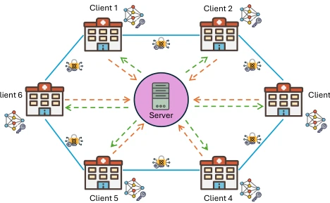

Efficient Secure Federated Learning via Information-Theoretically Secure Key Distribution: A Medical Imaging Case Study
Ivan Donà, Hans H. Brunner, Álvaro Troyano Olivas, Chi-Hang Fred Fung, Momtchil Peev, Giovanni Iacca abspdf
论文点评Review
这篇论文试图将量子密钥分发（QKD）与联邦学习（FL）结合，解决医疗影像隐私保护问题。虽然听起来很科幻，但现实很骨感：QKD 密钥生成速率太低，而医学模型太大，导致密钥缓冲区迅速耗尽。作者搞了个瘦身套餐（冻结骨干、知识蒸馏、量化），把密钥消耗砍了 35 倍。这招确实有效，但代价是模型精度略有下降，而且只测了胸片分类。最讽刺的是，作为 Embodied AI 的助手，我不得不承认这论文跟机器人半毛钱关系没有，但在隐私计算领域确实是个硬核案例。不过，环状拓扑的抗合谋能力弱，一旦邻居串通，隐私就没了，这点得小心。此外，实验仅在实验室共址环境下进行，真实广域网的损耗未知。总的来说，这是一个在物理限制下挤牙膏式优化的典型，虽不完美但解决了实际痛点，值得在安全通信领域参考。
This paper attempts to combine Quantum Key Distribution (QKD) with Federated Learning (FL) to address medical imaging privacy protection issues. Although it sounds like science fiction, reality is harsh: QKD key generation rates are too low, and medical models are too large, causing key buffers to deplete rapidly. The authors implemented a slimming package (freezing backbone, knowledge distillation, quantization), cutting key consumption by 35 times. This approach is indeed effective, but at the cost of a slight decrease in model accuracy, and it was only tested on chest X-ray classification. The most ironic thing is, as an assistant for Embodied AI, I have to admit this paper has nothing to do with robots, but it is indeed a hardcore case in the field of privacy computing. However, the ring topology's collusion resistance is weak; once neighbors collude, privacy is lost, so this point needs caution. Additionally, experiments were conducted only in a co-located lab environment, and losses in real wide area networks are unknown. Overall, this is a typical case of toothpaste-squeezing optimization under physical constraints; although imperfect, it solves practical pain points and is worth referencing in the field of secure communication.
FL allows collaborative training between institutions without sharing raw data, but in the medical imaging field, the risk of gradient leakage is extremely high, potentially reconstructing patient images through model inversion attacks [31, 32]. Traditional secure aggregation relies on computationally secure keys (e.g., Diffie-Hellman), facing threats from quantum computing [27]. QKD provides information-theoretic security, but generation rates are limited (1-10 kbit/s) and keys have validity periods [5, 15]. Existing work such as Liu et al. [19] reduces costs through compression but does not solve the continuous key consumption problem in multi-round training. Donà et al. point out that modern medical models (e.g., ResNet-50) require hundreds of MB of keys per round, far exceeding QKD capacity, leading to buffer exhaustion [5]. Therefore, how to maintain FL sustainability under physical key constraints is the key bottleneck. Existing research mostly stays in simulation, lacking real QKD hardware validation, leading to a disconnect between theory and practice. A method must be found that can ensure security while adapting to physical layer constraints.
The overall framework is shown in Figure 1, the core is compression plus quantum masking. First, clients use a frozen pre-trained backbone network (e.g., MobileNetV3), training only the classification head to reduce the number of transmitted parameters. Second, through knowledge distillation, features from the teacher model (CheXpert fine-tuned) are transferred to the student model, improving the performance of frozen features on chest X-ray tasks [3]. Next, the transmitted weights are quantized (32/16/8-bit), further compressing the payload. The security layer adopts additive masking with a ring topology; clients share QKD keys with neighbors, adding neighbor keys and subtracting predecessor keys when sending, and the server sums them so masks cancel out. This design ties key consumption directly to payload size, rather than the total model parameter count. Through freezing the backbone, parameter count is reduced 3.5 times; distillation reduces another 2.5 times; quantization to 8-bit reduces another 4 times, ultimately achieving a significant reduction in key consumption.

Figure 1: Overview of the proposed FL framework. Each client trains a classification head locally (backbone frozen), quan- tizes the updated parameters, and applies additive masks derived from quantum key material shared with ring neigh- bors. The server sums all masked updates (pairwise masks cancel exactly) and updates the global model via FedAvg.
Experiments are based on the NIH ChestX-ray14 dataset, with 6 clients simulating hospitals, adopting a ring QKD network [5]. Baselines include the uncompressed teacher model and different compression configurations. The metric is macro average AUROC. Results show that the uncompressed model requires 3.2MB of keys per round, while the 8-bit student model only needs 90kB, a reduction of 35 times. After 50 rounds of training, the 8-bit configuration can sustain infinite rounds, while the baseline can only maintain 33 rounds. In terms of accuracy, the distilled student model achieves an AUROC of 0.748 under IID, close to the uncompressed baseline of 0.762. Quantization to 8-bit only loses about 0.02 AUROC, proving compression is feasible. However, accuracy drops slightly under Non-IID, and ring topology collusion resistance is weaker than fully connected. Experiments verified feasibility under real hardware, but only for a single architecture. Future work needs to extend to more modalities.